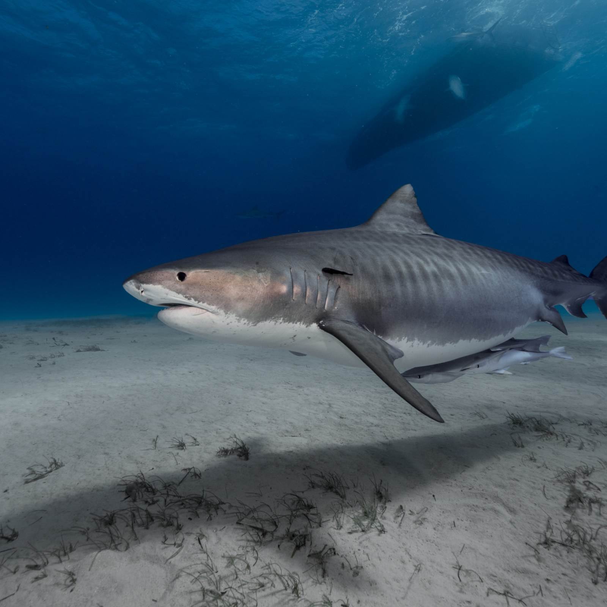
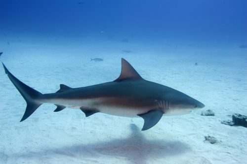

"Great" White Shark

37% of attacks on humans are from Great White Sharks
22% of Great White Shark attacks are fatal
Tiger Shark
 15% of attacks on humans are from Tiger Sharks
26% of Tiger Shark attacks are fatal
Bull Shark
 10% of attacks on humans are from Bull Sharks
21% of Bull Shark attacks are fatal